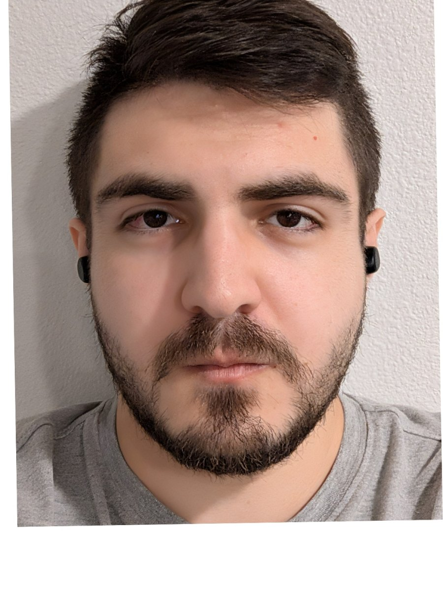
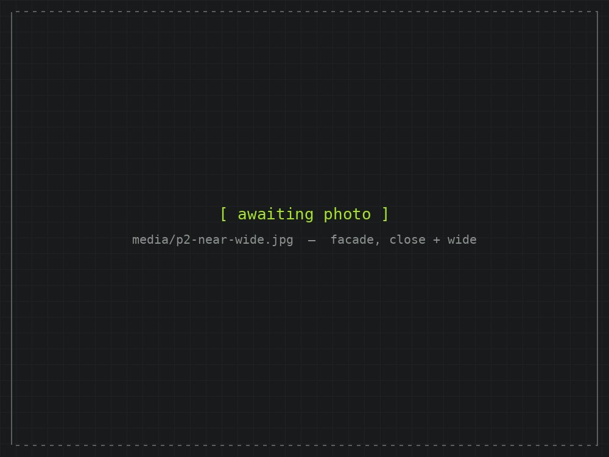
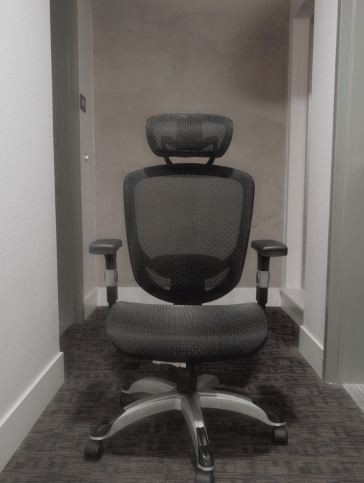
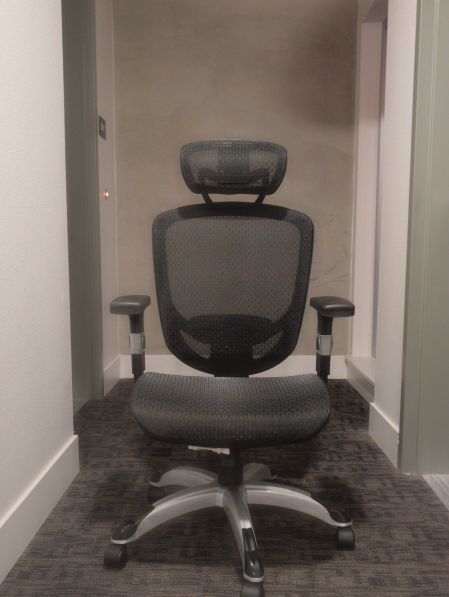
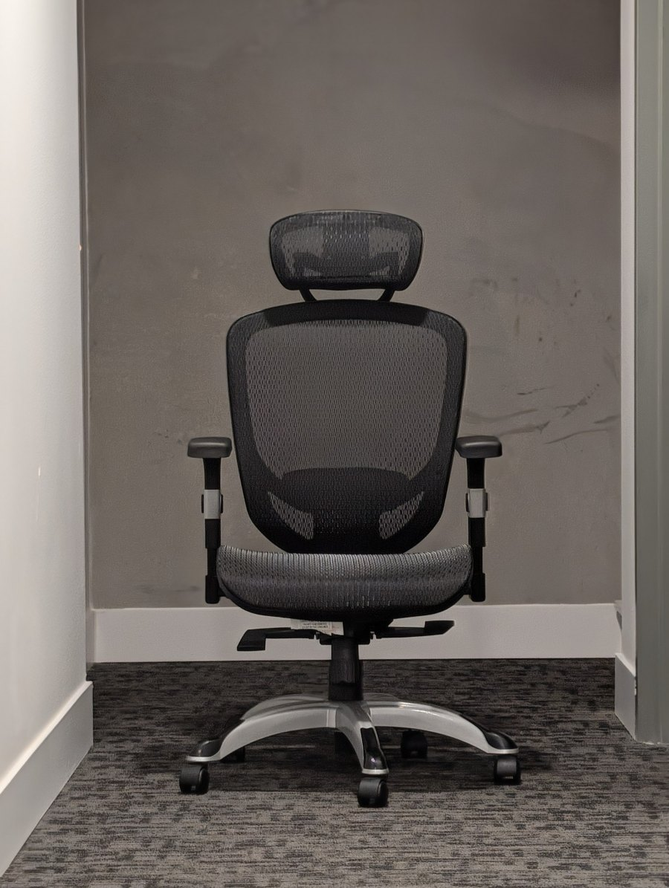
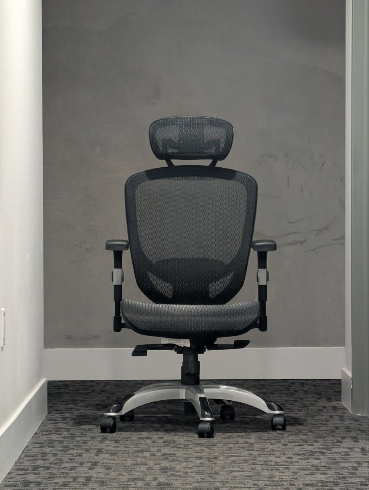
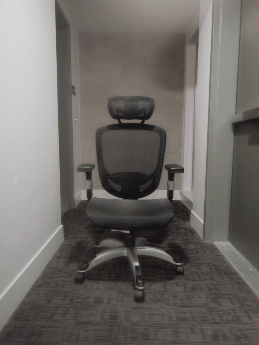

██████╗ ██████╗ ██████╗ ██╗ ██████╗ ██╔══██╗██╔══██╗██╔═══██╗ ██║██╔═████╗ ██████╔╝██████╔╝██║ ██║ ██║██║██╔██║ ██╔═══╝ ██╔══██╗██║ ██║██ ██║████╔╝██║ ██║ ██║ ██║╚██████╔╝╚█████╔╝╚██████╔╝ ╚═╝ ╚═╝ ╚═╝ ╚═════╝ ╚════╝ ╚═════╝
Project 0 · Becoming Friends with Your Camera
CS180 — Intro to Computer Vision and Computational Photography · Fall 2026
Three exercises with one idea underneath them: a photograph's size is set by the lens, but its shape is set by where you stand. Zoom multiplies every point by the same number, so it can enlarge a picture and never rearrange it. Walking changes the distance to each part of the scene by a different fraction, and that is the only thing that can bend a face, flatten a facade, or make a corridor breathe. All photographs are mine, shot handheld on a Google Pixel 10; the ratios are measured off the pixels and rounded honestly.
$ cat the-one-equation.md
everything below falls out of a single line of algebra
A pinhole camera takes a point sitting at distance Z in front of the lens, offset X sideways, and paints it on the sensor at:
1 │ x = f · X / Z // f = focal length (zoom) 2 │ y = f · Y / Z // Z = distance to that particular point
Two knobs. Turning f multiplies every point by the same constant — the picture gets bigger, nothing inside it changes shape. Changing Z is different, because Z is not one number: a face has a nose at one distance, eyes at another, ears at a third. Step back by Δ and every depth becomes Z + Δ, so the ratios between them all move:
1 │ size of A Z_B step back by Δ Z_B + Δ 2 │ --------- = ----- ─────────────► ------- 3 │ size of B Z_A Z_A + Δ 4 │ 5 │ near things shrink relative to far ones; the scene flattens. 6 │ as Δ → ∞ the ratio → 1 and depth stops being drawn at all.
Part 1 runs that on a face, Part 2 on a building, Part 3 on a corridor — with the zoom cancelling the size change, so only the shape change survives.
$ ./selfie --wrong-way --right-way
same face, same phone, two standing distances
An ordinary arm's-length selfie, then a second frame taken from across the room with the zoom pushed in until the head filled the same amount of frame. The faces come out matched in size to about 3%, so whatever still differs between them is perspective and nothing else.


To make the difference literal, both frames were rotated and scaled so the pupils land on identical pixels. The eyes are now pinned and cannot move; everything that still shifts is depth being drawn differently.


Why the close one looks wrong
Put the eye plane at distance Z. The nose tip stands about Δ ≈ 2 cm in front of it, so it is drawn larger than the eyes by Z / (Z − Δ):
1 │ Z = 0.35 m → 0.35 / 0.33 = 1.06 6% too big — the selfie look 2 │ Z = 1.50 m → 1.50 / 1.48 = 1.013 1.3% — a portrait 3 │ Z = 3.00 m → 3.00 / 2.98 = 1.007 0.7% — flat
The focal length never appears in that expression. A 2 cm nose is worth 6% of the trip to the lens at arm's length and almost nothing from three metres — that single fraction is the whole effect. Run it the other way for the ears, which sit behind the eye plane: up close they are drawn smaller and disappear behind the cheeks.
Measured on my two frames, with every length divided by the pupil-to-pupil distance so image scale cancels out:
| length ÷ interocular | close | far | change |
|---|---|---|---|
| nose base width | 0.48 | 0.46 | ≈ +4% |
| mouth width | 0.84 | 0.81 | ≈ +4% |
| eye width (control) | 0.386 | 0.385 | +0.3% |
| brow-to-brow span (control) | 1.869 | 1.868 | +0.0% |
The bottom two rows are the control: they lie in the same plane as the ruler they are divided by, so no amount of walking can touch them — and they don't move. The nose and lips stand a couple of centimetres in front of that plane and grow by about 4%, which is the predicted 6%-ish as closely as a handheld phone deserves.
$ ./facade --compression
the same experiment outdoors, and backwards
Part 1 walked in and watched a face bulge. Part 2 walks out and watches a building go flat. A facade seen at an angle has a near corner at Z and a far corner at Z + d, so the two ends of one wall are drawn in the ratio:
1 │ near bay Z + d d = depth along the wall 2 │ -------- = ------- Z = your distance to the near corner 3 │ far bay Z 4 │ 5 │ d = 30 m, Z = 6 m → 6.0× the wall dives away from you 6 │ d = 30 m, Z = 60 m → 1.5× bays nearly equal — flat
Note what is missing on the right-hand side: the focal length. Zooming from 60 m cannot undo the flattening, because the flattening was never about framing — it is the ratio 1 + d/Z, and only your feet can change that. Long lenses do not compress anything; standing far away does, and a long lens is simply what you reach for once you are far away.


Same building, same size in frame, opposite feeling — and the only thing that changed between the two exposures was how many metres of pavement were behind me. It is why a portrait is shot from across the room and an estate agent shoots a bedroom from the doorway with a wide lens: the photographer picks Z first, then picks a focal length to get the framing back.
$ ./dolly-zoom --vertigo --loop
walk back, zoom in, keep the subject nailed down — the room does the rest
An office chair in a dead-end corridor, photographed four times: step back, zoom in, keep the chair the same size. Hold the subject fixed and the room behind it has no choice but to move.





Why the room swells
Holding the subject means holding f / Z constant, so the focal length has to track the distance: f ∝ Z. A wall a further b behind the subject is then drawn at:
1 │ f Z 2 │ background ∝ ----- ∝ ----- since f ∝ Z when the subject is held 3 │ Z + b Z + b 4 │ 5 │ Z = 1·b → 1/2 = 0.50 standing close: the wall is drawn small 6 │ Z = 3·b → 3/4 = 0.75 7 │ Z = 10·b → 10/11 = 0.91 standing far: it catches up with the subject 8 │ Z → ∞ → 1.00 no depth left; wall and chair scale together
That climbs as Z grows. Walk backwards and the wall comes with you; walk in and it flees. Nothing in the room moved and the chair never changed size, which is exactly why the shot is unsettling — the picture reports two incompatible things about where you are standing. Hitchcock's crew shot it down a stairwell in Vertigo; I shot it down a corridor at a chair.
What the frames measure
Zooming by eye between shots is imprecise, so the chair drifted about 30% larger by the last frame. Cropping fixes it — a crop can only ever enlarge a subject, so the frame with the biggest chair is left untouched and the others are cropped up to meet it. Background magnification is then read off the skirting board on the back wall, a fixed object lying in the wall plane.
| frame | chair, as shot | zoom applied in post | frame kept | background |
|---|---|---|---|---|
| 1 — nearest | 1.00× | 1.32× | 76% | 1.0× |
| 2 | 1.20× | 1.10× | 91% | ≈ 1.3× |
| 3 | 1.15× | 1.15× | 87% | ≈ 1.55× |
| 4 — furthest | 1.32× | 1.00× | 100% | ≈ 1.7× |


$ tail notes.md
how it was made, briefly
1 │ chair correlate a headrest+backrest patch across a sweep of scales, 2 │ crop each frame to the window that implies, resample back to 3 │ 1928×2560 (Lanczos) — re-running the match returns 1.000 4 │ background skirting-board height, read twice per frame: one column band 5 │ left of the chair, one right. They agree to about 1% 6 │ faces 68-point landmark fit, similarity transform pinning the pupils, 7 │ all lengths divided by the interocular distance 8 │ colour animations only: each frame matched to a common mean/σ over the 9 │ chair. Stills are cropped, never retouched
Next time
Match the subject on screen between shots rather than by eye, so the correction at the end is a nudge instead of a crop. And shoot eight frames rather than four — that is the difference between a loop that glides and one that steps.